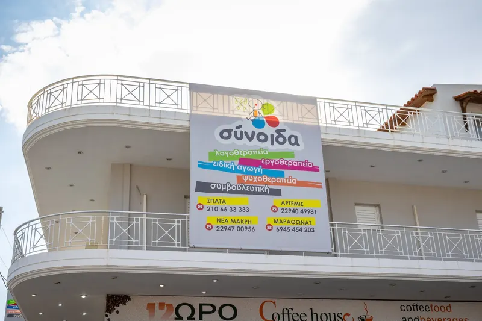
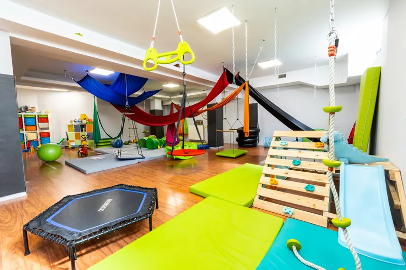
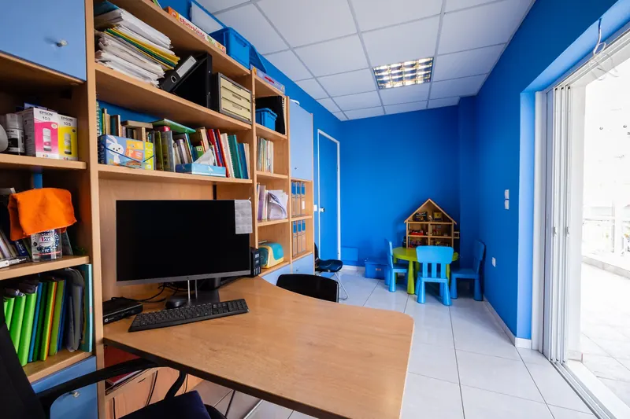
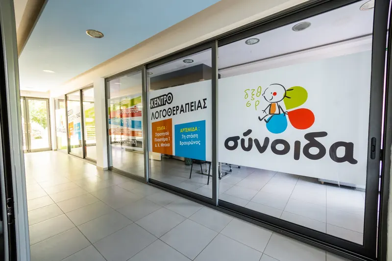
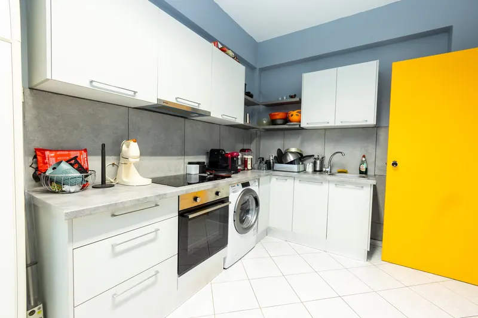
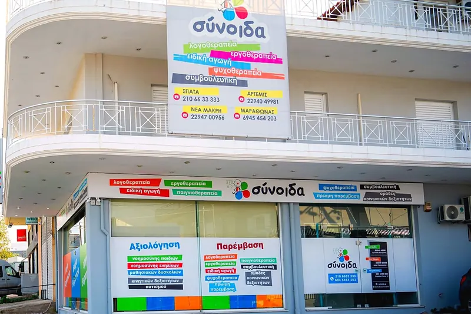
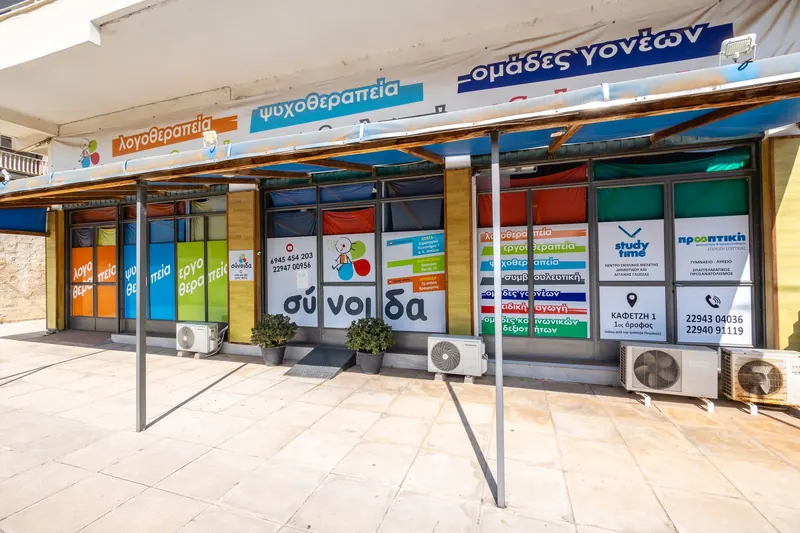

Αρτέμιδα
7η Στάση Βραυρώνος
22940 49981Στοιχεία και πρόσβαση
Κέντρα Ειδικών Θεραπειών
Αρτέμιδα · Σπάτα · Νέα Μάκρη · Μαραθώνας
Οι παρατηρήσεις και οι ανησυχίες σας μάς βοηθούν να γνωρίσουμε καλύτερα το παιδί.
Οι ειδικότητες συνδυάζουν τη γνώση τους γύρω από τις ανάγκες του παιδιού.
Επιλέγουμε δραστηριότητες που ταιριάζουν στις δυνατότητες και στα ενδιαφέροντα του παιδιού.
Διερευνούμε τις ανάγκες του παιδιού πριν προτείνουμε πρόγραμμα υποστήριξης.
Γνωρίζουμε το παιδί και δίνουμε χώρο σε όσα το διευκολύνουν να συμμετέχει.
Σχεδιάζουμε την υποστήριξη με βάση όσα χρειάζεται στο σπίτι, στο σχολείο και στο παιχνίδι.
Ίσως δυσκολεύεται να επικοινωνήσει, να συμμετέχει στο παιχνίδι, να ανταποκριθεί στις απαιτήσεις του σχολείου ή να διαχειριστεί όσα νιώθει.
Δεν χρειάζεται να γνωρίζετε ποια ειδικότητα να επιλέξετε. Πείτε μας τι παρατηρείτε, για να συζητήσουμε από πού μπορούμε να ξεκινήσουμε.
Συζητήστε μαζί μαςΘεραπείες
Δείτε τι προσφέρει κάθε θεραπεία.

Για παιδιά που δυσκολεύονται να μιλήσουν καθαρά, να κατανοήσουν ή να εκφράσουν όσα θέλουν. Δουλεύουμε την ομιλία, τον λόγο, τη ροή και την επικοινωνία, καθώς και δεξιότητες που προετοιμάζουν τα παιδιά για την ανάγνωση.
Περισσότερα για τη λογοθεραπεία
Υποστηρίζουμε τα παιδιά στα σημαντικά έργα στα οποία συμμετέχουν στην καθημερινότητά τους. Δουλεύουμε την κίνηση, τη λεπτή κινητικότητα, τον συντονισμό, την αισθητηριακή επεξεργασία και την οργάνωση, ώστε να συμμετέχουν με περισσότερη αυτονομία στο παιχνίδι, στο σπίτι και στο σχολείο.
Περισσότερα για την εργοθεραπεία
Δουλεύουμε την ανάγνωση, τη γραφή, τα μαθηματικά και την οργάνωση της σκέψης, με τρόπους που ταιριάζουν στο πώς μαθαίνει το παιδί.
Περισσότερα για την ειδική αγωγή
Ένας χώρος για να εκφράσει το παιδί ή ο έφηβος όσα νιώθει. Δουλεύουμε πάνω στις δυσκολίες που επηρεάζουν την καθημερινότητα, τις σχέσεις του και τη διαχείριση των συναισθημάτων του.
Περισσότερα για την ψυχοθεραπεία
Συζητάμε όσα σας δυσκολεύουν στο σπίτι και αναζητούμε μαζί πρακτικούς τρόπους υποστήριξης του παιδιού, με σεβασμό στις ανάγκες της οικογένειάς σας.
Περισσότερα για τη συμβουλευτική γονέων
Μέσα από το παιχνίδι, το παιδί βρίσκει τρόπους να εκφράσει και να επεξεργαστεί συναισθήματα και εμπειρίες, με την υποστήριξη εκπαιδευμένου θεραπευτή.
Περισσότερα για την παιγνιοθεραπεία
Μέσα από παιχνίδια, συζήτηση και κοινές δραστηριότητες, τα παιδιά εξασκούν την επικοινωνία, τη συνεργασία, την οργάνωση και τη διαχείριση καθημερινών κοινωνικών καταστάσεων.
Περισσότερα για τις ομάδες

Σχετικά με μας
Κάθε παιδί έχει τις δικές του δυνατότητες, ενδιαφέροντα και δυσκολίες. Στη ΣΥΝΟΙΔΑ, γνωρίζουμε το παιδί, συζητάμε μαζί σας και σχεδιάζουμε την υποστήριξη που ανταποκρίνεται στις ανάγκες του.
Σύνοιδα σημαίνει:
Το πρώτο βήμα
Ακούμε όσα σας απασχολούν και σας εξηγούμε τα επόμενα βήματα.
Μέσα από την αξιολόγηση, διερευνούμε τις δυνατότητες και τις ανάγκες του.
Συζητάμε μαζί σας τα ευρήματα και προτείνουμε στόχους και πρόγραμμα που ταιριάζουν στο παιδί.
Είμαστε εδώ για να σας ακούσουμε και να σας εξηγήσουμε πώς μπορούμε να βοηθήσουμε το παιδί και την οικογένειά σας.
Αρτέμιδα · Σπάτα · Νέα Μάκρη · Μαραθώνας
Θα μας βρείτε στην Αρτέμιδα, στα Σπάτα, στη Νέα Μάκρη και στον Μαραθώνα. Επιλέξτε ένα κέντρο για να δείτε τα στοιχεία επικοινωνίας και τις οδηγίες πρόσβασης.

7η Στάση Βραυρώνος
22940 49981Στοιχεία και πρόσβαση
Στρατηγού Πλαστήρα 1 & Χ. Μπέκα
210 6633333Στοιχεία και πρόσβαση
Αγίας Παρασκευής 8
22947 00956Στοιχεία και πρόσβασηΣπηλαίου Πανός 10
694 5454203Στοιχεία και πρόσβαση